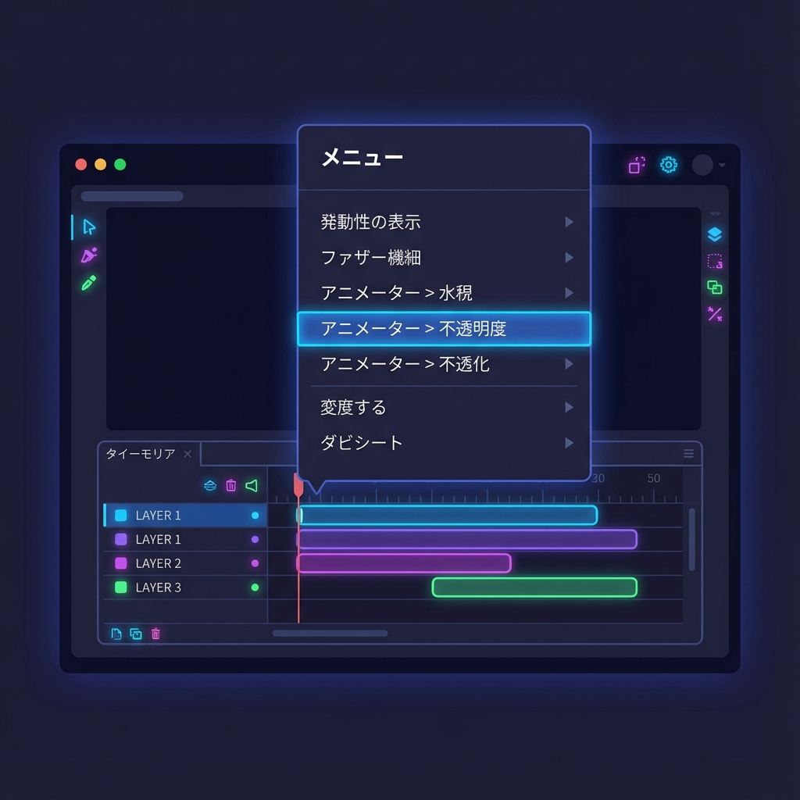
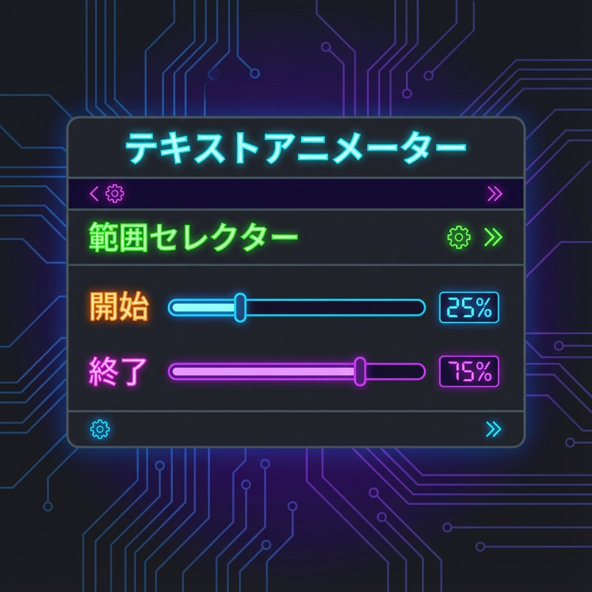
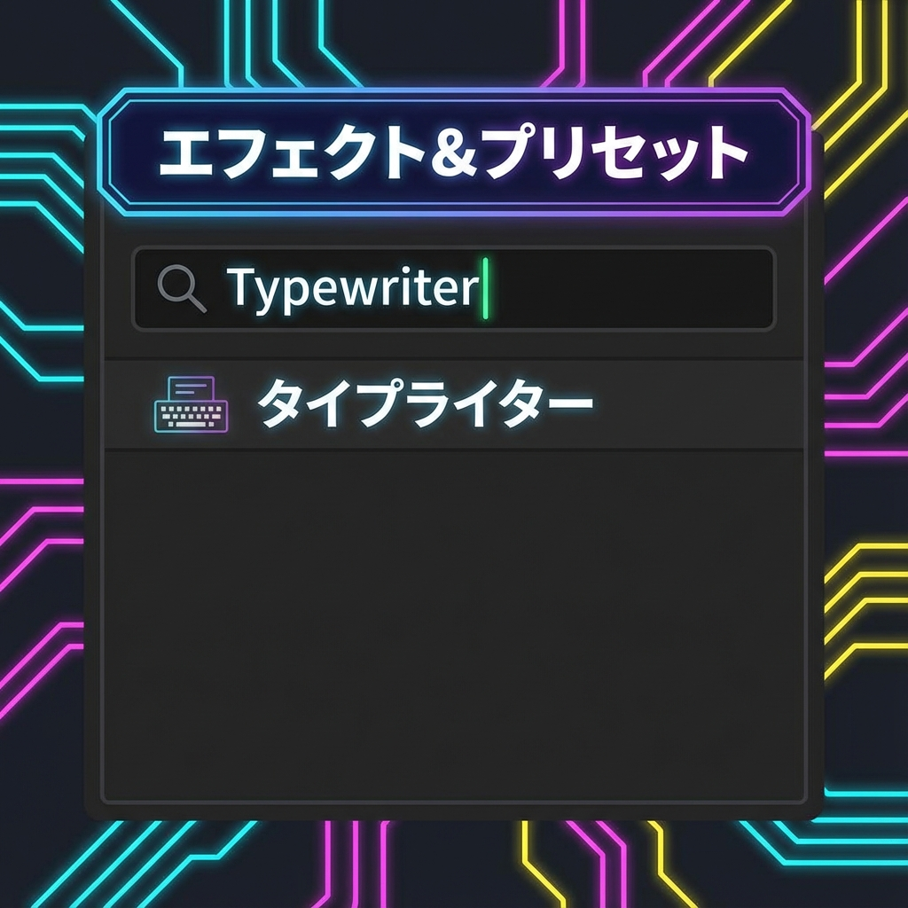

⌨️
今日のショートカット
G ペンツール
V 選択ツール
🎯 このミッションのゴール
映画の予告編で見るような、文字がパラパラと現れるアニメーションを作ります。 Aeには強力な「アニメーター」機能があり、一文字ずつの制御が簡単です。
🎬 どんな時に使うの？（利用シーン）
「マスク」は、こんな場面で必須です！
- 窓の外の景色を合成する
- 被写体の後ろに文字を出す
- おしゃれなシーン切り替え（トランジション）
⌨️ タイプライター風アニメーション
1アニメーターを追加

- テキストレイヤーを開き（＞マーク）、「アニメーター」から「不透明度」を選びます。
- 追加された「不透明度」の値を 0% にします（文字が消えます）。
2範囲セレクターを動かす

「どの範囲の文字に0%を適用するか」をアニメーションさせます。
- 「範囲セレクター 1」を展開します。
- 「開始」の数値を動かしてみましょう。文字が左から順に現れますね？
- 0秒で「0%」、2秒で「100%」になるようにキーフレームを打ちます。
🔧 さらに高度な設定
「高度」プロパティの中にある「シェイプ」を「矩形」から「上へ傾斜」などに変えると、出現の仕方がフワッと柔らかくなります。
🤯 プリセットを使う（裏技）
実は、もっと簡単にやる方法があります。
3アニメーションプリセット

- 「エフェクト＆プリセット」パネルで「Typewriter」と検索します。
- 見つけたプリセットをテキストレイヤーにドラッグ＆ドロップするだけ！
- キーフレームを押せば（Uキー）、タイミング調整もできます。
🏁 Mission 3 クリア条件
✅ 文字がパラパラと左から現れるアニメーションができた！
😱 困ったときは？ (トラブルシューティング)
マスクが反転しない
マスクの設定（レイヤー下部）にある「反転」チェックボックスをONにしてみましょう。
新しいシェイプができちゃう
レイヤーを選択していないと新規シェイプになります。必ず画像を「選択してから」ペンツールを使いましょう。